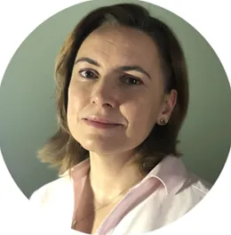
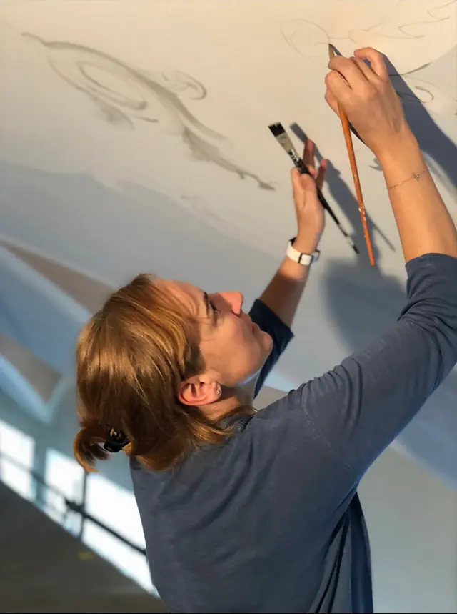

Sylwia Mirowska malarstwo i projektowanie wnętrz
Maluję obrazy, w których przenikają się przyroda i duchowość człowieka. Projektuję wnętrza, a ściany zdobię malarstwem własnoręcznie.
Zobacz obrazyNa obrazie: W każdym z nas jest pustynia, olej na płótnie, 60 x 120 cm, 2016Na obrazie: Czapla i lilie wodne, akryl, 2023

O mnie
Poszukując piękna i dbając o dobre rzemiosło, w pracy łączę wiedzę praktyczną z wrażliwością artystyczną.
Od ponad piętnastu lat zawodowo projektuję wnętrza. Ukończyłam studia podyplomowe na wydziale architektury wnętrz Wyższej Szkoły Sztuki i Projektowania w Łodzi, a z pasji do rysunku i malarstwa - także na wydziale malarstwa Akademii Sztuk Pięknych w Krakowie. Jestem absolwentką Uniwersytetu Ekonomicznego w Krakowie, więc o technice i budżecie inwestycji myślę od pierwszej rozmowy.
Warsztatu uczyłam się od najmłodszych lat w krakowskich pracowniach, głównie w Pałacu pod Baranami u Ludwika Pindla. Pierwsze wystawy miałam w Krakowie, Rzymie i Kassel pod koniec lat 90.

Malarstwo
Inspiracją dla mojego malarstwa jest świat przyrody i duchowości człowieka. O moich obrazach mówi się, że są baśniowe, poetyckie i ilustracyjne. Lekkość akwareli stosuję równie chętnie jak akryl i olej w malarstwie sztalugowym.
Obrazy powstają w cyklach, m.in. „Natura”, „Planeta Smi” i „Notatki z podróży”, często podczas plenerów nad Biebrzą, jeziorem Dadaj, w Toskanii i we Lwowie. O prace dostępne w sprzedaży proszę pytać bezpośrednio.
Wydarzenia artystyczne
- 2023Wystawa poplenerowa w Olsztynie i Dadaju, Dadaj Resort & Spa
- 2019Wystawa poplenerowa MWA „Oddźwięk”, Myślenice
- 2018Wystawa poplenerowa MWA „Spotkania”, Myślenice; Gminny Ośrodek Kultury w Poraju
- 2016Wystawa indywidualna „PLANETA smi”, Krowoderska Biblioteka Publiczna w Krakowie
- 2013Cykl „Stare kamienice”, Gala finałowa konkursu Excellent Design w Krakowie
Wcześniej m.in. Lwowskie Towarzystwo Sztuk Pięknych (2012), Galeria Utopia w Rzymie (1998), Jugendhof Dörnberg przy documenta w Kassel (1997).
dostępny
dostępny
dostępny
dostępny
dostępny
dostępny
dostępny
dostępny
dostępny
dostępny
Architektura wnętrz
Dokładną ofertę przygotowuję po omówieniu zakresu i wizji lokalnej. Zaczynam od koncepcji funkcjonalnej, bo na niej zapadają najważniejsze decyzje. Zawsze uwzględniam Państwa założenia i pokazuję własne pomysły aranżacyjne.
Projekty
- Koncepcja funkcjonalna
- Projekt techniczny: układ, przebudowy, punkty świetlne i hydrauliczne, rysunki dla wykonawcy
- Zestawienie materiałów wykończeniowych
- Wizualizacje aranżacji
- Wspólny wybór materiałów i nadzór autorski
Malarstwo ścienne
Zdobienia na ścianach wykonuję własnoręcznie: w kuchniach, łazienkach, salonach, pokojach dziecięcych i na klatkach schodowych, a także w lokalach usługowych, szkołach i kaplicach.
Maluję na tynku, gładzi i płytach g-k, a także na drewnie, szkle i metalu, z motywem dobranym do wnętrza i budżetu.
Kontakt
Zapytanie o obraz, projekt wnętrza albo malowidło na ścianie - najlepiej telefonicznie lub mailem.
- Telefon
- 607 465 632
- sylwia@artmirowska.pl
- Adres
- Sylwia Mirowska
Tokarnia 657, 32-436 Tokarnia